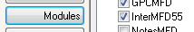
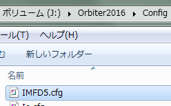
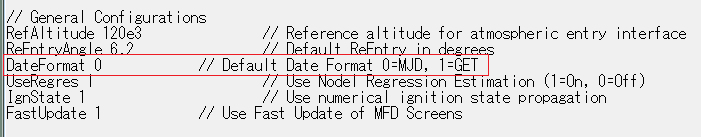

IMFDのインストールと設定
IMFD(Interplanetary MFD)は、ランデブーや惑星間航行など、さまざまなマニューバを実行できる多機能なMODです。
また、手動では難しい操作の多くを自動化することができます。
筆者からのお願い
IMFDを導入する前に、必ずOrbiterチュートリアルに目を通しておいてください。
チュートリアルの内容を理解していない場合、IMFDについて質問をいただいても回答できないことがあります。
ダウンロード + インストール
Interplanetary MFD - Orbiter addon
Orbiter2016なら5.7
Orbiter2010なら5.5をダウンロードする。※

※どちらのバージョンでも、操作方法に違いはありません。
ダウンロードしたファイルを解凍して、中身をOrbiterのフォルダに上書き。
LaunchpadのModulesタブを開く。
Orbiter2016ならInterMFD57
Orbiter2010ならInterMFD55にチェックを入れる。

設定
Configフォルダを開いて、IMFD.cfgというファイルを探す。
IMFD.cfgをメモ帳などのテキストエディタで開く。

IMFD.cfgにはIMFDの様々な設定が保存されている。
これらの設定は、ゲーム内からはProgram Menu→Configurationで変更できる。
時刻系の変更
DateFormatのすぐ右側の数字を変更することで、IMFDで使用する時刻系を選択できる。

0ならMJD（Modified Julian Date＝修正ユリウス日）
1ならGET（Ground Elapsed Time＝地上経過時間）になる。
通常はMJD、AMSOではGETにしておく。
参照：軌道要素と時刻系